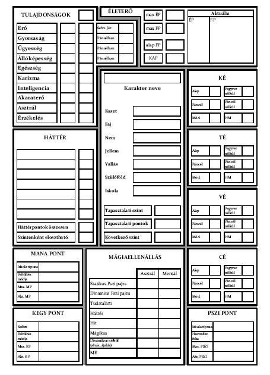

Asztali szerepjátékok

A szerepjáték (angolul: role-playing game; RPG) olyan, általában több résztvevős játék, amelyben a
játékosok
verbális úton alakítanak egy közösen elképzelt fantáziavilágot, ahol a játék menete sokban emlékeztet
egy
közösen kitalált könyv vagy film cselekményére. A játékosok ennek az elképzelt világnak egy-egy kitalált
szereplőjét, a karaktereket személyesítik meg. A történet alapötletét a mesélő határozza meg, aki a
szabályok alapján a játékosok nézeteltéréseit is elbírálja. A mesélő nem egy karakterrel rendelkezik,
hanem
a játékot és a mellékszereplőket mozgatja és a karakterek számára motivációt, bonyodalmat biztosít. Ezt
a
játékosok a karakterek ismereteit felhasználva igyekeznek megoldani.
A karakterekkel történő azonosulásnak a különböző szerepjáték típusokban különböző korlátai vannak. A
legelterjedtebb, asztali játékban a játékosok nem teljesen imitálják a karaktereik tetteit, csak szóban
közlik, illetve jelzik azokat. A karakter szavait szokás egyes szám első személyben előadni, ilyenkor
megengedett a gesztikulálás és mindenféle, a játékot segítő metakommunikáció.
Koncepció
Sok gyerekjáték mutat hasonlóságokat a szerepjátékokkal, ezek azonban nagyban különböznek kiforrott
változataiktól. Egy csapat vadnyugatosdit játszó gyerekkel szemben a felnőtt szerepjátékosok saját
karaktereket alkotnak, melyekkel később saját történetben vesznek részt. Céljuk a filmek vagy regények
hangulatának újraélése. Emiatt nem kizárt, hogy a játék folyamán a játékosok által átélt kaland egy
sokak
által ismert könyv vagy film történetének felelevenítése, szimulálása. A gyakorlatban azonban
jellemzőbbek
az egyedi, a mesélők fantáziáján alapuló, ismert elemeket csak kiegészítőként felvonultató történetek.
Történetükben valóban mutatnak hasonlóságot a szerepjátékok a filmekhez vagy a könyvekhez, de annál
sokkal
szabadabb és sokszínűbb, hiszen míg egy film a szerzők és forgatókönyvírók képzelete szerint alakul, és
egy
színdarab eseményei a szerző művész fantáziája által valósul meg, addig egy szerepjátékban nincsenek
ilyen
megkötések. A játék célja kimondottan az, hogy egy kitalált történetben a játékosok, mint főszereplők
vehessenek részt, az események menetét kedvükre befolyásolhassák.
Ehhez nyújtanak segítséget az üzletekben megvásárolható szabályrendszereket tartalmazó könyvek. Ezek nem
magát a játékok eseménysorozatát, a kalandot tartalmazzák, csak a használatos szabálykereteket és a
világleírásokat, melyekben a kalandok cselekménye játszódik majd. A történetet teljes egészében a
játékosok
és a mesélő találják ki, alakítják.
A szerepjátékok túlnyomó részénél ez úgy történik, hogy a mesélő kidolgoz egy alap történetet, ami
valamilyen problémát vet fel. A legegyszerűbb példa: a királylányt elrabolta a gonosz sárkány. A helyzet
megoldása a játékosok feladata. A mesélő által kitalált történetvázat a játékosok cselekedetei teszik
élővé
és mozgalmassá. A példánál maradva a játékosok egyike alakíthat egy hős lovagot, aki elhatározza, hogy
megmenti a királylányt. Másikuk, aki esetleg egy kevésbé szeplőtelen jellemű tolvaj, pusztán a sárkány
barlangjában fellelhető anyagi javaktól vezérelve is csatlakozhat lovagunkhoz. Viszont mivel a
szerepjáték
lényege pont a fantázia korlátlanságában és cselekvés szabadságában rejlik, tolvajunk akár azt is
mondhatja,
őt nem érdekli a királylány sorsa, inkább a közeli városban próbál szerencsét.
A szerepjáték gyakori jellemzője a kampány játék. Ennek értelmében, ha a történet véget is ér, egy újabb
kezdődik el, akár egy folytatásos filmsorozatban. Ha hőseink legyőzték az említett sárkányt, a mesélő
ötletétől vezérelve előfordulhat, hogy a karakterek egyik ismerősét börtönbe zárják. Mivel jól tudják,
hogy
feddhetetlen életű emberről van szó, így biztosra veszik, hogy valaki szándékosan akarja hamis vádak
alapján
elítéltetni. A játékosok feladata kideríteni, hogy ki ez a rosszakaró és így tisztázzák barátjukat a
vádak
alól. A kampánynak gyakorlatilag sosincs vége, a történethez mindig újabb epizód fűzhető.
Egy játékülés rendszerint órákon keresztül tart, akár egy egész napot is igénybe vehet. Ha az ülés véget
ér,
a történetet akár a közepén is abba lehet hagyni, következő alkalommal az utolsó eseménytől folytatható.
A játékban a játékosok általában mint társak vesznek részt. Habár előfordulhat némi rivalizálás,
szélsőséges
esetekben a megszemélyesített karakterek összetűzése, azonban általánosságban elmondható a
szerepjátékról,
hogy nem verseny orientált. A játék célja a szórakozás öröme, nem a játékostárs legyőzése. A
szerepjátékot
ez a motívum is erősen elhatárolja a hagyományos társasjátékoktól.
A játék tényleges menete során a játékosok csak részben játsszák ki szerepüket. Használhatnak első szám
első
személyű megfogalmazást, metakommunikációt, viszont nem jellemző a kosztüm, a játékfegyverek illetve a
karakterek nagyobb lélegzetvételű mozgásának eljátszása, az utazás. Ez utóbbiak az élő szerepjáték
sajátjai.
A játék során lehet alkalmazni rajzot a terep szemléltetésére, esetleg figurákat a karakterek
elhelyezkedésének szimulálására.
Ideális esetben egy játékban a mesélővel együtt 3-6 fő vesz részt. Az ennél nagyobb létszámú társaságok,
azaz partyk a mesélő számára kezelhetetlenné válnak, a játékosokra pedig nem jut elég figyelem.
Példajáték
A rövid példa ízelítőt akar adni a szerepjáték tényleges menetéből, ahogy az a valóságban fest. Képzeljünk
el néhány játékost, amint egy asztal körül ülnek, előttük karakterlapok, dobókockák, jegyzetek és néhány
szabálykönyv. Dőlt betűvel jelöltük, mikor szólal meg a játékos a karaktere nevében, és szögletes zárójelben
azt, amikor a saját nevében beszél.
Habár a terepet és a karakterek elhelyezkedését szemléltethetik vázlatok és figurák, a szerepjáték
alapvetően nem táblás játék.
Mesélő: Mint említettem az előbb, az idegen egy kidőlt fa törzsén
ül. Zöld ruhája miatt először szinte
észre sem veszitek, pedig szemmel láthatólag nem próbál meg elrejtőzni előletek. A termetét tekintve
elf
lehet, de az arcát nem látjátok. A hátán lévő, szépen megmunkált íj is ezt sugallja. Az erdő nagyon
csendes.
Játékos 1: Mellette vezet el az ösvény?
Mesélő: Igen.
Játékos 2: Jó, akkor a lovamat lépésre fogom, és megállítom, amikor
mellé érek. Üdv néked, erdő fia! Talán
útbaigazítást tudnál nekünk adni…
Mesélő: És néktek is, utazók! Ritkán látni errefelé embert, és még ritkábban ilyen
felfegyverzett
társaságot.
Játékos 3: Jól megnézem magamnak ezt az elfet és a környékét. Semmi
gyanúsat nem látok?
Mesélő: Dobjál a húszoldalúval titkosan. Csak én láthatom, mi az
eredmény.
A játékos dob, de az eredményt csak a mesélő látja. Erre néha szüksége lehet, mivel a játékos nem mindig
tudhatja, hogy például semmi gyanús nincsen az illetőn, vagy egyszerűen sikertelen a dobása, és nem
veszi
azt észre. Mivel a mesélő tudja, hogy a játékos karaktere elég jó nyomolvasó, a szabályok alapján
összehasonlítja a dobott értéket a karakter szakképzettségével. Adott esetben, ha a mesélő szükségesnek
találja, dobhat ő maga is a játékos helyett, így csak ő tudja miért kellett dobni, és hogy mi az
eredmény.
Jelen esetben a dobás sikeres.
Mesélő:Most, hogy így jobban megnézed, valóban észreveszel valami
furcsát. Látod, hogy az elf környékén
egyáltalán nincsenek lábnyomok, mintha csak odarepült volna.
Játékos 3: Érdekes… Egyelőre nem szólok senkinek, de ha alkalom
adódik rá, titokban jelzek a varázslónak.
Játékos 2: Mi az Ezer Lánc Völgyét keressük, ahol a szóbeszéd szerint Alkar Gromtak, a
gonosz
varázsló él.
Van némi elintéznivalónk vele…
Mesélő: Nos, éppenséggel tudom, hogy merre vezet az út. Kössünk egyezséget,
utazók.
Játékos 1: Miről lenne szó?
Mesélő: Én megmondom, melyik ösvényen haladjatok tovább, és azt is tudom, hogyan
lehet a legkönnyebben
elkerülni a varázsló ork szolgáit, akik a völgy bejáratát őrzik.
Játékos 2: És mit kérsz cserébe?
Mesélő: Veletek tartanék. Nekem is van némi elszámolni valóm a mágussal.
Játékos 1: Ezt meg kell beszélnem a társaimmal. Kissé
félrevonulunk, hogy az elf ne halljon
minket.
Bár a többi játékos is hallotta, amit a mesélő a játékos 1-gyel
beszélt, de a való életben nem biztos, hogy
értették volna a beszélgetést. Nincs rá ugyan szükség, hogy a
játékos újra megossza az információkat a
csapattagokkal, de valós alapokra helyezve ez így hiteles.
Játékos 3: Fiúk! Ez csapda is lehet. Szinte
semmilyen nyomot nem látok az elf körül. A
varázsló is
megvizsgálhatná.
Játékos 1: Én is jól
megnézem. Van rajta valami szokatlan? Az Igaz Látás
varázslatot is használom,
lehetőleg úgy, hogy ne vegye észre.
A mesélő titkosan dob, hogy megtudja, az elf észreveszi-e, hogy
a varázsló mágiát használ. A játékosoknak
nincs szerencséjük. Az elf szintén ért a varázsláshoz, de nem
akarja felfedni magát, így nem szól semmit. A
mesélő se közli ezt, hiszen a játékosok erről egyelőre még nem
tudnak.
Mesélő: Nos, jól megnézed magadnak ezt az
elfet, de semmi különöset nem fedezel fel rajta. Aztán,
amikor
varázsolni kezdesz, látod, hogy a körvonalai megremegnek és
elhalványodnak. Majd ahol az előbb az elf ült,
most egy fiatal nőt látsz, ruhája a Hold Rendjének
varázslóiéra emlékeztet.
Játékos 1: Illúzió!
Játékos 2: No, mit tegyünk?
Játéktechnika, szabályok
A szabályok a karaktereket, azok lelki, mentális és fizikai
tulajdonságait, a világot, a karakterek és a
világ kölcsönhatását modellezik. A karakterek és a világ
számszerű megjelenítését statisztikák segítik,
amelyek összehasonlítása szabályozza a kölcsönhatások
kimenetelét, ahol a véletlent gyakran a kockadobások
jelenítik meg.
Így például szokás számokban kifejezni a karakterek testi
erejét, intelligenciáját, mágikus energiáját,
bátorságát, harci képzettségét és egyéb meghatározó
tulajdonságait. Ezeknek a jellemzőknek a
számszerűsítése, illetve a dobókockáknak a lefektetett szabályok
szerinti alkalmazása, lehetőséget teremt a
mesélőnek a szituációk elbírálására. Adott jelenetben például
könnyen meghatározható, a karakternek milyen
értéket kell dobnia a kockával ahhoz, hogy sikeresen hajtson
végre egy kívánt cselekedetet, legyen az akár
egy másik szereplő bizalmának elnyerése vagy egy meredek fal
megmászása.
A szabályrendszerek típusai

Alapvetően két törekvés figyelhető meg a szerepjáték
rendszerekben: egyik az egyszerűségre, másik a
valóságszerűségre való törekvés. A szabályok nagyban
meghatározzák a játékok hangulatát. Egyes játékok
nagyon részletes, valósághűségre törekvő szabályrendszerrel
rendelkeznek, ilyen például a Középfölde
Szerepjáték, míg mások inkább az egyszerűbb, könnyen kezelhető
rendszert részesítik előnyben. Ezekben
szabadabb teret kapnak a hangulati elemek és a mesélő.
Minden szerepjátékhoz tartozik egy szabályrendszer, amely
útmutatást ad a játéktechnikai részek
levezetéséhez. A szabályrendszerek kidolgozottságukat tekintve
nagyon eltérőek lehetnek, mint azt már írtuk.
Egyik legfontosabb szabályként szokta szinte mindegyik említeni,
hogy egyik szabály sem áthághatatlan. A
játék lényege a szórakozás, ezért bármelyik szabály - a mesélő
belátása szerint - mellőzhető, átírható.
A
szabályrendszerek alapvetően a következő csoportokba
sorolhatóak:
- Egyedi rendszer: Az adott játék saját világképpel rendelkezik,
az általa használt szabályrendszer
következetesen ehhez van igazítva. Ez a legáltalánosabb
gyakorlat. Ebből kifolyólag más-más szerepjátékok
legtöbbször más-más rendszert használnak. A szabályok bemutatása
azonban rendszerint hasonló tematikus módon
történik. Ez megkönnyíti a játékosok eligazodását a különböző
szerepjátékokban. A cyberpunk világban
játszódó Cyberpunk 2020 szerepjáték is ilyen egyedi rendszert
használ.
- Független rendszer: Gyakorlatban ezek világ független
rendszerek, amit a játékosok az általuk használt
világhoz alakíthatnak, bővíthetnek saját komponenseikkel. A
legtöbb ilyen rendszer egy általános világra
készül, ami csak a „fizikai” törvényeket definiálja. A rendszer
teljes szabadságot biztosít az egyedülálló
játékkörnyezet kiválasztására (fantasy, napjaink, sci-fi), ahol
a szabályok kis módosítással más
környezetben is jól alkalmazhatók. Ide tartozik például a
Rolemaster vagy Spacemaster, illetve a Generic
Universal RolePlaying System (GURPS).
- Rendszercsalád: Bizonyos szerepjátékok ugyanabban a világban
játszódnak, de különböző aspektusát mutatják
be. Jellemzően ezeket a játékokat ugyanaz a kiadó is publikálja.
Habár ezek más-más játékok, a világ
azonossága és a szabályrendszer nagyfokú megegyezése biztosítja
a játékterek közötti átjárhatóságot.
Klasszikus példája a World of Darkness világa, ahol játszhatunk
a Vampire: The Masquerade vagy a Werewolf:
The Apocalypse játékokkal is. Az említett átjárhatóság miatt
játéktechnikailag könnyen megvalósítható, hogy
az egyik játékos egy vámpírt, a másik viA szabálykönyvek felépítéseszont egy vérfarkast
alakítson a történetben.
A szabálykönyvek felépítése
A legtöbb, szaküzletben megvásárolható szabálykönyv
szerkezetében hasonló tematikát követ. Természetesen
ezek szerepjátékonként váltakozhatnak, de jellemzően
megtalálhatóak bizonyos felépítésbeli elemek. Általában
két részre bonthatók az adott szerepjátékkal foglalkozó
megvásárolható kiadványok: alap szabálykönyvre és
kiegészítőkre.
Az alap szabálykönyv tartalmazza a játékhoz szükséges alapvető
információkat. Bizonyos részeinek tartalmi
ismerete nélkül a játék nem játszható. Felépítésük gyakran a
következő tematikát követi:
- Bevezető: A szabálykönyvben itt olvashatók a legáltalánosabb
részek. Gyakran tartalmaz útmutatást teljesen
kezdő szerepjátékosok számára arról, hogy mi is az a
szerepjáték, hogyan kell játszani. Lehet benne rövid
hangulati összefoglaló arról, hogy az adott szerepjáték miben
különbözik hasonló társaitól.
- Szabályrendszer: Ez a rész tartalmazza a játéktechnikai
elemeket, úgy mint a karakterek tulajdonságai, a
képzettségek használata, a csatákban használatos harcrendszer, a
karakterek fejlődésének menete. Gyakran
kapnak helyet benne az adott szerepjátékra jellemző, a
karakterek gondolkodását és érzelmeit szimuláló
szabályok. Ilyen lehet például a jellem, a hírnév vagy a
személyiség degenerálódásának megjelenítése,
esetleg a karakter gyengeségei vagy erősségei.
- Különleges képességek: Habár tartalmilag a szabályrendszerhez
tartozik, a szerepjátékok általában önálló
fejezetben ismertetik a karakterek által használatos különleges
képességeket. Ezek lehetnek varázslatok,
mágikus diszciplínák leírásai, de tartalmazhatja például a
testbe építhető technikai implantátumok
ismertetését is, ahogy az adott szerepjáték rendelkezik.
- Világleírás: A szerepjáték saját világának bemutatása. Ez lehet
részletes kifejtés is, azonban jellemzőbb,
hogy a készítők inkább csak felületes ismertetés szintjén
foglalkoznak a témakörrel. A részletes bemutatás
önálló kiegészítőben szokott helyet kapni. A világleíráson belül
szó eshet egy általános koncepcióról, a
világ hangulatáról, néhány ismert, nem a játékosok által
alakított szereplőjéről illetve gyakori
ellenfelekről.
- Egyéb: A szabálykönyvben helyet kaphat még néhány
alapkaland-ötlet, példa a játékban fellelhető kincsekre.
A kiegészítőkben kapnak helyet az adott szerepjátékkal
foglalkozó olyan kiadványok, amelyek nem feltétlenül
szükségesek a játékhoz, de tovább színesíthetik azt.
A játék igényeihez mérten a kiegészítők számos témát ölelhetnek
fel. Kiterjedhetnek részletes
világleírásokra, létsíkok ismertetésére, a világban megtalálható
szervezetek bemutatására, ismertebb
szereplők részletes adataira, kincsek és varázstárgyak
leírására, legyőzendő szörnyekre. Játéktechnikai
témák említhetnek új szabályokat, eddig nem használt kasztokat,
fajokat és képzettségeket. Találkozhatunk
bennük új technikai tárgyakkal, járművekkel is.
Habár egy szerepjáték hangulatát számos a világában játszódó
regény is színesítheti, mint ez a M.A.G.U.S.
esetében is történik, játéktechnikai értelemben ezeket nem
soroljuk a kiegészítők közé.
A játék résztvevői, kellékei
Mesélő: A szerepjátszás elengedhetetlen résztvevője a
kalandmester, azaz a mesélő (KM, avagy DM - dungeon
master, GM - game master) aki egy személyben felel a történet
előremeneteléért, valamint a szabályok
betartásáért. Ő találja ki a cselekmény vázát, a megoldandó
feladatot, a küldetést. Habár a mesélőnek nincs
karaktere, ő személyesít meg minden nem játékos karaktert. Ő
dönt minden olyan kérdésben, amire a
játékosoknak nem lehet kihatása (például esik-e az eső, avagy
kik laknak az adott városban). A mesélő joga
bármely kérdésben a végső döntés meghozatala, szava
megkérdőjelezhetetlen. Érdemes azonban megjegyezni, hogy
ez a jogkör nem adhat okot igazságtalanságra vagy visszaélésre.
A mesélő szerepét mindig ugyanaz a részt
vevő játékos tölti be egy kalandon belül. Kalandonként azonban
ez akár változhat is.
Kétségtelen, hogy a mesélőnek a játékosokénál jóval nehezebb
feladata van. Az általa leírt környezet
folyamatos mozgásban, változásban van, illetve kell, hogy
legyen. Tegyük fel, hogy a mesélő egy nagyvárosi
környezetben kíván egy kalandot mesélni. Előtte az asztalon
térképek és rajzok sorakoznak, hogy kellékként
könnyítsék mind a játékosok, mind a saját dolgát. A kalandmester
elképzeli az utcát, ahol a játékosok éppen
sétálnak, netán keresnek valamit, és megfelelő leírást ad a
helyszínről. Ám ez önmagában még nem elég. Az
utcán autók haladnak, dudálnak, az emberek kiabálnak. A járdán
embertömeg hömpölyög, és egy
csatornanyílásból émelyítő bűz árasztja el az utcát. Ezeket a
szereplőket, történéseket mind a mesélő
mozgatja, írja le, tölti meg a világot élettel.
Karakter: Karakternek nevezzük azokat a kitalált
személyiségeket, akik a történet szereplői. A karakterek
két fő csoportra oszthatók:
játékos karakterek (JK avagy PC - player character), akiket a
játékosok irányítanak. Ők a történet
főszereplői. A játékosok akár játékülésenként cserélgethetik
őket és újat találhatnak ki, azonban sokkal
jellemzőbb, hogy egy karakter sokáig, akár évekig folytatja
pályafutását. A játékos így lehetőséget biztosít
a fejlődésre és rendszerint a játék is élvezetesebb egy
megkedvelt állandó karakterrel.
nem játékos karakterek (NJK avagy NPC - non-player character),
akik a kalandmester irányítása alatt állnak.
Ők a történet visszatérő vagy egyszeri mellékszereplői. Így
tehát a mesélő mozgatja mind a gonosz sárkányt,
mind a megmentésére váró királylányt, az aggódó királyt, az úton
szembejövő vándort és így tovább. A nem
játékos karakterek jelenléte elengedhetetlen egy történetben,
kidolgozottságuk nagyban hozzájárul a kaland
színességéhez.
Karakterlap: A karakterek számszerű értékekben kifejezett
tulajdonságainak, illetve egyéb információknak a
feljegyzésére szolgál. Jelenléte nem elengedhetetlen, de
használata általános gyakorlat.
A különböző szerepjátékok leggyakoribb dobókockái: 4, 6, 8, 12,
20, 10 és 10 oldalúak (az utóbbi kettő külön
is használható vagy együtt százalékdobásokhoz)
Dobókocka: A szerepjátékban a dobókocka hivatott eldönteni
véletlenszerű események kimenetelét, illetve
olyat, amit pártatlanul nem lehetne megítélni. Ilyen lehet
például egy küzdelem lebonyolítása vagy egy
karakter képességének használata. A „dobókocka” elnevezés
félrevezető, ugyanis nem geometriai értelemben
vett kockáról van szó. A különböző szerepjáték rendszerek
különböző dobótesteket használnak. Ezek lehetnek
szabályos testek vagy nem szabályosak. Az utóbbihoz tartozik a
tízoldalú „dobókocka” is. Az egyszerűség
kedvéért ezeket mind kockának nevezi a szerepjátékos társadalom.
Habár vannak bizonyos játékrendszerek,
amelyek teljesen mellőzik a dobókocka használatát, ez nagyon
ritka. Az viszont rendszerenként változik, hogy
az adott játék egy vagy többféle kockát használ.
Szerencse: A dobókocka használata azt a látszatot keltheti, hogy
a szerepjátszás során a szerencsére túl
nagy szerep hárul. Ez azonban nem szükségszerűen van így. Habár
egy játékülés során számtalan alkalommal
szükség lehet kockadobásra, ezeknek a jelentősége általában nem
kritikus és gyakran nélkülözhető is.
Ettől függetlenül előfordulhat olyan szituáció, amikor a dobott
érték nagyban meghatározza a helyzet
kimenetelét, esetleg a karakter halálához is vezethet. Ilyen
lehet például, ha egy pusztító erejű varázslat
hatását próbálja meg a főhős túlélni. Ebben az esetben, bár a
karakter értékei módosíthatják az esélyeket, a
vakszerencse döntő tényező lehet.
Hosszú távon azonban a szerencse szerepe elhanyagolható. A
mesélőnek lehetőleg illik kerülni az olyan
helyzetek gyakori alkalmazását, ahol a karakter élete vagy más
hasonló horderejű dolog egyetlen kockadobáson
múlik. A jó mesélők lehetőséget teremtenek arra, hogy a játékos
előrelátásával és megfelelő szerepjátszással
megvédhesse a karakterét, vagy kedvezően befolyásolhassa az
eseményeket. Ha ez az előbbiek ellenére mégsem
megoldható, akkor célszerű lehetőséget teremteni valami
alternatív megoldásra, legyen az – az említett
példánál maradva – a karakter „feltámasztása” vagy a dobás
során, a karakter érdekében történő titkos kis
csalás a mesélő részéről.
Az ilyen jellegű veszélyek fokozhatják az izgalmakat, a mesélő
burkolt beavatkozása pedig a cselekmény
továbbszövésére teremthet alkalmat. A szerepjátékos szleng a
mesélői segítségnyújtásokat, a drámairodalomból
kölcsönözve, csak deus ex machina néven emlegeti.
Bővebben: Szerepjátékos szleng
Világkép: Még ha az adott szabályrendszer csak általános
útmutatásokat is ad, minden játéknak fontos és
alapvető részét képezi a világkép. Ez az a környezet, ahol a
játék eseményei ténylegesen történnek, legyen
az egy sci-fi vagy egy fantasy világ, esetleg napjaink
alternatív valósága. A legtöbb játék biztosít
valamilyen világleírást és megadja a környezeti elemeket, ahol a
cselekmény történik. Vannak játékosok
azonban, akik inkább preferálják a saját maguk által kitalált
világot. A szerepjátékok között olyat is
találhatunk, amelyik annyira összetett és változatos világot
biztosít a játékosok számára, hogy csak a világ
több kiadványt ölel fel. Ilyen például a Dungeons & Dragons
világának egyik része, a Ptolus, amely önmagában
is 600 oldal terjedelmű városleírás. Mint az említett példában
is történik, a világleírásokhoz gyakran
komplex kalandötletek is társulnak.[2][5]
A szerepjátékokban megjelenített környezet játékonként eltérő
lehet. Stílusonként az alapvető dolgok
hasonlóak lehetnek, de rendszerint a fejlesztők törekednek a
világra jellemző, egyedi hangulat
kialakítására. A leggyakoribb világok és kapcsolódó stílusok a
következők:
Fantasy – Dungeons & Dragons, M.A.G.U.S., Káosz szerepjáték,
Kard és Mágia
Cyberpunk – Cyberpunk 2020
Alternatív történelem – Pendragon, Ars Magica
Alternatív napjaink – James Bond 007
Sci-fi – Star Wars, Armageddon 2092 – Mars
Horror – Call of Cthulhu, Wraith: The Oblivion, Kult
Western – Coyote
Humor – Ghostbusters, Pokéthulhu, Paranoia
Szuperhős – Champions, Marvel Super Heroes
Világfüggetlen játékok – GURPS, Fuzion
A szerepjátékok között olyat is találhatunk, ahol a világkép és
stílusok keverednek, mint például a
Shadowrun, ahol fantasy és cyberpunk elemeket ötvöztek az
alkotók. Változatos kiegészítőkkel rendelkező
játékoknál az is előfordul, hogy a játéknak több világban
játszódó fajtái is vannak. Ilyen adaptáció a
Vampire: The Masquerade napjaink világából középkori környezetbe
ültetett változata, a Dark Ages: Vampire.
Szabályrendszer: Alapvető része minden szerepjátéknak, habár
kidolgozottságukban a különböző
szabályrendszerek nagyon eltérhetnek.
A szerepjáték története
Kialakulása, fejlődése
A szerepjátékok előfutárának is felfogható harci játékok egészen
az ókorig nyúlnak vissza. A különböző
ütközetek vér nélküli modellezése szinte egy idős magával a
hadviselés művészetével, de a szerepjátékok
szempontjából az első említésre érdemes név H. G. Wellsé, aki
1915-ben kiadta a Kis háborúk (Little Wars)
című könyvét. Ezzel az amatőrök számára is elérhetővé váltak a
harci játékok. Az első, kereskedelmi
forgalomban is kapható táblás harci játék Charles Roberts
nevéhez fűződik, aki ezt 1953-ban jelentette meg.
Szintén az ő nevéhez fűződik az Avalon-Hill Game Company
megalapítása, ami ma a világ egyik legnagyobb
játéktervező és -gyártó cége. A harci játékok népszerűsége a 20.
század hatvanas, hetvenes éveiben érte el
csúcspontját.[6]
Gary Gygax, a szerepjáték egyik atyja (2007.)
A szerepjáték kialakulásának egyik legfontosabb része az 1960-as
évek végén kezdődött, amikor is Gary Gygax
találkozott Jeff Perrennel Wisconsin Lake Geneva nevű
kisvárosának helyi klubjában a The Lake Geneva
Tactical Studies Associationben. Jeff Perren már rendelkezett
egy rövidebb szabályrendszerrel középkori
harci figurákhoz. Az engedélyével Gary Gygax kibővítette a
szabályokat, ami LGTSA Medieval Military
Miniatures Rules címen megjelent az International Federation of
Wargamers havilapjában. Később a szabályokat
továbbfejlesztette és fantasy elemeket is beemelt a játékba. Ez
a változat Chainmail címen jelent meg
1971-ben a Guidon Games kiadásában.[7]
Dave Arneson a következő név, akit meg kell említeni. Ő már egy
ideje kísérletezett a Chainmail
szabályrendszerével és némileg próbálta átalakítani. Levelezés,
majd egy Gen Conon történt személyes
találkozó után megkezdődött a kisebb csapatoknak szóló játék
kialakítása. A szabályok kidolgozása Gary
Gygaxre hárult, de Dave Arnesonnak és a témával szintén
foglalkozó Dave Megarynek is határozott ötletei
voltak. 1970-71 környékén vette kezdetét a Dave Arneson által
vezetett Blackmoore várbörötön-kampány, ahol a
szokásos európai hadszíntereket felváltotta egy képzeletbeli vár
kazamatáinak bejárása. Jellegét tekintve ez
nagy előrelépést jelentett a mai szerepjátékok irányába. A Gary
Gygax által összeállított első 50 oldalas
vázlat 1972 telén került az International Federation of
Wargaming körének tagjaihoz tesztelésre, amit Lake
Geneva játékosai még tovább teszteltek. A visszajelzések alapján
Gary Gygax 150 oldalra bővítette a játékot.
Lényegében ez volt az az anyag, ami 1974-ben a Chainmail
utódjaként Dungeons & Dragons címen, mint a világ
első szerepjátéka megjelent. Kétségtelen, hogy az első
szerepjáték megalkotásában mind Gary Gygaxnek, mind
Dave Arnesonnak is kimagasló szerep jutott.[6][7]
Dave Arneson, a D&D társszerzője
Az 1974-es Gen Conon napvilágot látott Dungeons & Dragons,
röviden D&D, egy olyan típusú figurás harci
társasjátékhoz tartalmazott szabályokat, ahol egy kis méretű
csapat járhat be egy terepet különböző, a
játékvezető által meghatározott akadályokba, ellenségekbe
ütközve, miközben kincseket keresnek. A játék egy
három kötetet tartalmazó dobozból állt. Taktikai jellegét
jellemzi, hogy bajnokságokat rendeztek, ahol
kizárólag a sikeresség, hatékonyság volt mérvadó.[7]
Ezután számos szerző jelentetett meg különböző orgánumokban (a
The Dragon magazinban, a Polyhedron
magazinban, kiegészítő szabályok Arduin Grimoire-ral kezdődő
sorában, nyomtatásban kiadott kalandok
formájában) szabálymódosításokat, -pontosításokat és
-kiegészítéseket, valamint számos újabb D&D kiadás is
napvilágot látott. A szabály szövegeinek decentralizáltsága
miatt nem voltak általánosan elfogadott
szabályok, mindenki csak olyan szabályok alapján játszott, amit
ismert – elképzelhető volt, hogy két D&D-ző
csapat egyáltalán nem ismert közös forrást.
1977-ben a TSR kiadásában jelent meg az Advanced Dungeons &
Dragons (röviden AD&D) és egy újabb, Dungeons &
Dragons címmel rendelkező játék (a változat közismert neve Basic
D&D), utóbbi egy sorozat első kiadványa
volt, amely a kezdő játékosokat zárkóztatta fel az AD&D-hez.[8]
Ezek megjelenésekor már piacon voltak a
versenytársak is (például Tunnels & Trolls, RuneQuest,
DragonQuest, Traveller, The Fantasy Trip), és ekkorra
már fokozatosan kialakultak a maihoz hasonló szerepjátszási
szokások is.[9]
A szerepjátékból később több módosult változat jött létre,
különösképp az élő szerepjáték (live action
role-playing game, LARP), a gyűjtögetős kártyajáték (collectible
card game, CCG) vagy a számítógépes
szerepjáték (computer role-playing game, CRPG), amelyekkel nem
összekeverendő a szerepjáték eredeti formája.
Ezeket a játéktípusokat éles határok választják el egymástól
mind behatároltságukban, mind szabályaikban,
mind egyéb jellemzőikben. Például a számítógépes változat a
programozók által megszabott korlátokon belül
mozog, de a szerepjáték eredeti változatának csak a fantázia
szab határt.
Kritikák és támadások
A szerepjátékkal kapcsolatban számos orgánum fogalmazott meg
kritikát külföldön és Magyarországon is. Ez a
szerepjáték-ellenes hullám Amerikában a nyolcvanas,
Magyarországon a kilencvenes években tetőzött. A
nem-szerepjátékos társadalom gyakran idegenkedve, értetlenül
fogadja a játékot. Félelmeik gyakran a játék
félreismeréséből táplálkoznak. Ilyen szempontból a
szerepjátékkal kapcsolatban megfogalmazott vádak sokban
hasonlítanak a Harry Potter sorozattal kapcsolatos
ellenérzésekhez.[3]
Gyakran érte a szerepjátékot az okkultizmus, még szélsőségesebb
esetekben a sátánizmus vádja. Ennek egyik
nyilvánvaló forrása, hogy a fantasy szerepjátékok során a
játékosok gyakran bújnak varázslók vagy egyéb
természetfölötti hatalmak bőrébe. Gyakran előfordul, hogy olyan
szereplőket testesítenek meg, amelyeket
kultúrtörténetileg negatívan ábrázolnak. Ezek lehetnek vámpírok,
vagy akár démonikus lények is.[10][11][12]
Fontos azonban megjegyezni, hogy ezek az „azonosulások” egy
egészséges személyiségnél nem járnak nagyobb
veszéllyel, mint például a rablósat játszó gyerekeknél, a magyar
hagyományokat ápoló és szörnyűséges
maszkokat öltő busójárás szereplőinél vagy egy thriller jellegű
mozifilm nézőjénél. Az esemény után egy
egészséges személyiség leveti szerepét, a film élményeit a
moziban, a szerepjátékét az asztalnál hagyja.[4]
Steve Jackson Games kontra Amerikai Egyesült Államok
Titkosszolgálata
Szintén egy félreértésen alapszik az az eset, mikor az Amerikai
Egyesült Államok Titkosszolgálata egy
1990-es rajtaütés során lefoglalta a Steve Jackson által
alapított Steve Jackson Games játékkiadó vállalat
számítógépeit, amely majdnem a cég teljes üzleti bukásához
vezetett. A félreértésre a cég GURPS Cyberpunk
című szerepjátéka adott okot, ami egy cyberpunk jellegű sötét,
erősen technokrata jövőben játszódik. A
titkosszolgálat vádja szerint a kiadóvállalat tényleges hacker
tevékenységgel foglalkozott és a könyv
számítógépes bűncselekményekhez nyújtott anyagot. Ez
nyilvánvalóan a játék valódi mivoltának nem ismeréséből
fakadt. A cég által kezdeményezett bírósági tárgyalás
kártérítéssel és a titkosszolgálat elmarasztalásával
végződött.[13][14]
James Dallas Egbert III eltűnése
A michigani egyetemről 1979-ben eltűnt egy tizenhat éves
egyetemista. A fiú magánéleti problémák miatt
öngyilkosságot akart elkövetni az egyetem alatt húzódó
szerelőfolyosó labirintusban. Habár a próbálkozás
sikertelen volt, a fiú titokban elmenekült a városból. Eltűnését
nyomozás követte. Az esetet a helyi sajtó
úgy ismertette, hogy az eltűnés oka egyértelműen a Dungeons &
Dragons szerepjátékkal volt kapcsolatba
hozható, amit a fiú is játszott. Az eset felderítésében és a fiú
megtalálásában William Dear magánnyomozó
tett eredményes lépéseket. Az ügy feltárása során
bebizonyosodott, hogy az öngyilkossági kísérlet nem
hozható összefüggésbe a szerepjátékkal. Az említett magánéleti
problémák miatt a fiú 1980-ban harmadszorra
is öngyilkosságot kísérelt meg, ami ezúttal sikerrel járt. A kor
szerepjátékokhoz való negatív hozzáállást
jelzi, hogy Mazes and Monsters (Útvesztők és szörnyetegek)
címmel az esetből Rona Jaffe regényt írt, ahol a
játék rovására erősen kiszínezte a történteket. Tom Hanks
főszereplésével a könyvből azonos című
szerepjáték-ellenes tévéfilm is készült 1982-ben. Magyarul ez
Misztikus játék címmel jelent
meg.[15][16][17][18][19][20]
ROSSSSZ vélemények
Patricia Pulling fia, egy aktív D&D játékos 1982-ben öngyilkos
lett és a fiú édesanyja az említett
szerepjátékban látta fia halálának egyértelmű okát. Miután a
TSR, a Dungeons & Dragons szerepjáték kiadója
ellen indított per nem járt sikerrel, Patricia Pulling
létrehozta a BADD (Bothered About Dungeons and
Dragons; magyarul kb.: a Dungeons and Dragons miatt aggódva. A
rövidítés angolul a „bad” szóra utal, aminek
magyarul a jelentése „rossz” vagy esetleg „gonosz.”) nevű
egyszemélyes szervezetet. A szervezet hangot
kívánt adni a szerepjáték, azaz kifejezetten a Dungeons &
Dragons „sötét” oldalának. Állítása szerint a
játék kapcsolatban áll és motivál az ördögimádatra,
boszorkányságra, kannibalizmusra, homoszexualitásra,
prostitúcióra, öngyilkosságra, gyilkosságra, szadizmusra,
szexuális perverziókra és hasonló jellegű
dolgokra.[21][22]
A BADD elért némi sikert abból a szempontból, hogy bizonyos fokú
nyilvánosságra tett szert konzervatív és
keresztény médiumokban és számos egyéb helyen is, mint tényt
hangoztatta nézeteit. Magánnyomozói engedélyét
megszerezve Patricia Pulling számos szerepjátékkal kapcsolatos
tárgyaláson vett részt. Ezeket az ügyeket
mind elejtették. Patricia Pulling egy könyvet is megjelentetett
The Devil's Web: Who Is Stalking Your
Children For Satan? (Az ördög hálója: a Sátán mely szolgája les
gyermekeitekre?) címmel. A könyv többek
között olyan képtelenségeket állít, hogy a Necronomicon egy
valós könyv, amit a fiatalok széles köre olvas.
Patricia Pulling egyszer azt is nyilatkozta, hogy a virginiai
Richmond lakosságának 8%-a sátánista. A The
American Association of Suicidology (Amerikai Szuicidológiai
Szövetség), a U.S. Centers for Disease Control
(Amerikai Kórkezelési Központ) és a Health & Welfare (Kanadai
Egészségügy és Jólét) nevű szervezetek végül
arra a megállapításra jutottak, hogy nincs összefüggés az
öngyilkosság és a szerepjáték között.
A vádak erősen beárnyékolták a kor szerepjátékról alkotott
képét, amin nem javított, hogy a TSR, a Dungeons
& Dragons, a legismertebb és legsikeresebb szerepjáték kiadója
szinte semmit sem tett a szerepjátékok ellen
indított boszorkányper megfékezésére. Ez a többi, kevésbé
ismert, második vonalbeli kiadóra hárult. Ezen
belül a legnagyobb elismerést Michael Stackpole sci-fi és
fantasy író szerezte, aki alapos oknyomozói
munkával a végére járt a BADD különféle írásaiban hangoztatott
vádak igazság tartalmának, s azok tényszerű
állításai gyakran puszta mesének bizonyultak. A munkáját
összefoglaló Pulling Jelentés (The Pulling Report)
az interneten is hozzáférhető. A szervezet végül Patricia
Pulling halálával 1997-ben
megszűnt.[3][18][21][23][24][25][26][27][28]
Magyarországi története
A sci-fi és fantasy irodalom megjelenése
A szerepjátékok magyarországi előfutára maga a fantasy, illetve
a sci-fi irodalom megjelenése. Az új műfaj –
és még inkább a sci-fi – beszivárgásának legfontosabb csatornái
a Galaktika antológia és magazin, és a
Kozmosz Fantasztikus Könyvek sorozat, ami már 1969-től közölt
műveket, többnyire a tudományos-fantasztikum
területén. A fordító, szerkesztő Kuczka Péter neve szinte
egybefonódott a kiadvánnyal és a sci-fi
magyarországi történetével. Számos, ma már klasszikusnak számító
író művét jelentették meg, amelyek között
Isaac Asimov, Stanisław Lem vagy Arthur C. Clarke neve csak
kiragadott példa. A hetvenes évektől
Magyarországon is egyre több sci-fi-író tevékenykedett, mint
például Nemere István vagy Zsoldos
Péter.[29][30]
Habár az első, hazánkban kiadott fantasy mű – Tolkien: A babó –
még, mint mesekönyv jelent meg már 1975-ben
a Móra Ferenc Könyvkiadó gondozásában, a tényleges fantasy
korszak kezdete a nyolcvanas évekre tehető.
Szinte törvényszerűen a legelső művek között adták ki A Gyűrűk
Ura trilógiát 1981-ben. A nyolcvanas évek
legvégétől kezdődik meg Magyarországon a fantasy irodalom egyre
nagyobb mértékű kiadás. Az elsők között
jelentek meg olyan klasszikus művek, mint Robert E. Howardtól a
Conan, a barbár (1989), Margaret Weis és
Tracy Hickman tollából a Sárkánydárda-krónikák (1992), Michael
Moorcocktól a Melibonéi Elric (1993) vagy R.
A. Salvatore sötét elf ciklusának első része, az Otthon (1995).
A külhoni fantasy irodalom beszivárgásával
párhuzamosan a magyar szerzők tábora is egyre népesebb lett,
akik néhol íróként, máshol fordítóként tűntek
fel. Nemes Istvántól (alias Jeffrey Stone, John Caldwell)
megjelent A Káosz Szava (1990), Gáspár Andrástól
(alias Wayne Chapman) A halál havában (1990) és az Észak Lángjai
(1992), illetve Kornya Zsolttól (alias Raul
Renier) az Acél és oroszlán (1995). Természetesen a hazai és
külföldi írók és művek listája távolról sem
teljes, de rámutat arra, hogy a sci-fi irodalom mellett, a
fantasy is egyre nagyobb teret kapott,
elfogadottabbá és közkedveltebbé lett.[29][30]
A szerepjáték műfajához kapcsolódó lapok is megjelentek
ugyanebben az időben. 1989-ben megjelent a Fantasy
című magazin, ami 1990-ben Atlantisz néven havilappá alakult. Ez
1991-ig bezárólag elsősorban az angolszász
műveket mutatta be. 1992-ben indult útjára a Bíborhold című
szerepjátékos magazin, ami a konkurenciaharcnak
köszönhetően néhány évvel később Holdtöltére lett átkeresztelve,
de végül 1995-ben ez is megszűnt. A lap
évekig a szárnyait bontogató szerepjátékos szubkultúra
meghatározó fóruma és szaklapja volt. A Bíborhold
munkatársai indították útjára 1992-ben az első magyar levelezős
szerepjátékot is, a Túlélők Földjét.
Népszerűségét jelzi, hogy volt időszak, amikor több ezren
játszották. 1994-től megjelent a Rúna magazin, ami
elsősorban az akkor már piacon lévő M.A.G.U.S.-t kívánta
támogatni. A két nagy lap mellett számos kisebb is
feltűnt, de ezek csak ideig-óráig maradtak meg a piacon. Ilyen
volt például a Démon is. Az internet széles
körű elterjedésével szerepjátékkal foglalkozó honlapok jelentek
meg, amelyek manapság is otthont adnak
fórumoknak és részben átvették a havilapok szerepét.[29][30][31]
Magyarországra a szerepjáték nem közvetlen úton jutott el, hanem
megelőzte egy közvetítő változata, a
lapozgatós könyvek. A Kaland Játék Kockázat néven is ismeretes
sorozat részei, a nyolcvanas évek végétől
jelentek meg hazánkban. Habár nem tekinthetők igazi
szerepjátéknak, fontos szerep jutott nekik abból a
szempontból, hogy a magyar közönséggel is megismertették a
nemlineáris, passzív olvasás és játék élményét.
Ezek a lapozgatós könyvek sokkal inkább voltak játékok, mint
regények. A leírt történet szereplőjének
tetteit bizonyos keretek között az olvasó irányíthatta. A
cselekmény választási lehetőségeket ajánlott fel
az olvasónak, akinek döntésének megfelelően az adott oldalra
kellett lapoznia. A könyvet így nem elejétől a
végéig olvasták, hanem oda-vissza lapozgatva. A történet
alakulását így az olvasó irányíthatta, az előre
meghatározott választási lehetőségek alapján. Ez a merőben új
játék és olvasási stílus Magyarországon is új
távlatokat nyitott. Igazi szerepjátéknak azonban azért sem
nevezhető, mert nem társaságok játszották, és a
szerepjátékkal ellentétben a cselekményt csak meghatározott
irányokba lehetett mozgatni. A lapozgatós
könyvek világképe is sokban emlékeztet a klasszikus
szerepjátékokéra: leginkább fantasy (Ian Livingstone: A
gyíkkirály szigete vagy a Bajnokok próbája) és cyberpunk (Ian
Livingstone: Az országút harcosa) környezetben
játszódtak a történetek. A Kaland Játék Kockázat sorozat és
hasonló lapozgatós könyvek virágkora a
nyolcvanas évek végétől kezdődően a kilencvenes évek első
felében volt, aminek az igazi szerepjátékok
megjelenése vetett véget.[31]
90-es évek: felemelkedés és bipolaritás
A nyolcvanas évek legvégén, illetve a kilencvenes évek elején a
komolyabb külföldi szerepjátékokhoz nem volt
könnyű hozzájutni Magyarországon. A problémát nem csak a játékok
beszerezhetősége jelentette, hanem az éledő
szerepjátékos közösségek alacsony anyagi lehetőségei is –
tekintettel arra, hogy az akkori szerepjátékosok
tízes évei végén, húszas évei elején járó, leginkább még önálló
keresettel nem rendelkező diákok voltak.
Szintén komoly problémát jelentett, hogy hivatalos magyar
fordítás nem létezett a híres külföldi
szerepjátékokról. A körülmények hatására jött létre az Advanced
Dungeons & Dragons szerepjáték kalóz
fordítása, a hivatalosan sose kiadott, csak kézről kézre járó
fénymásolat, ami Rubin Kódex néven vált
ismertté a magyar szerepjátékos társadalom berkeiben. Erre a
házi készítésű fordításra jellemző volt, hogy
néhol hemzsegett a fordítási és stilisztikai hibáktól, ennek
ellenére azonban komoly forrásnak számított a
műfaj kedvelőinek körében.[32]
Az első magyar fejlesztésű szerepjáték 1991-ben jelent meg Harc
és Varázslat címen. Szűk, leginkább már a
témában járatos magyar játékosok körében lett ismert, komoly
marketingstratégia még nem állt mögötte. A
játék szabályrendszere is sok szempontból gyenge lábakon állt,
azonban felépítésében tartalmazott néhány
előremutató megoldást is, mint például a példakaland megléte.
1993-ban adta ki a Valhalla Páholy a máig is
legsikeresebb magyar szerepjátékot, a M.A.G.U.S.-t, ami
kétségkívül nagymértékben hozzájárult a
magyarországi szerepjátszás népszerűsítéséhez és formálásához.
Gyakorlatilag ez az az időszak, ahonnan a
magyarországi szerepjátszásról, mint számottevő tényről
beszélhetünk. Mint ahogy azt az idevágó táblázat is
ismerteti, számos magyar fejlesztésű szerepjáték követte még
ezt, van ahol több, van ahol kevesebb sikerrel.
A hivatalosan kiadott szerepjátékok mellett meg kell említeni a
műfaj természetes velejáróját, a számos házi
készítésű szerepjátékot. Ezek olyan komplett játékok, esetleg
csak néhány szabály gyűjteménye vagy olyan
világok, amit lelkes játékosok alkottak saját társaságuk
szórakoztatására, azonban sose adták ki őket.
Ezeknek a megléte tény, bár a szubkultúrára kifejtett hatásuk
elenyésző.[1][31][33]
A kilencvenes évek közepére tehető az az időszak is, amikor a
konkurenciaharc a már aktív szerepjátékos
társadalmat is megosztotta. Két alapvető tábor létezett: az
Advanced Dungeons & Dragonst (és alapvetően a
külföldi játékokat) illetve a M.A.G.U.S.-t játszók. Az előző
tábor inkább a Bíborholdat, az utóbbi a Rúna
magazint olvasta. Jellemző volt erre az időszakra, hogy a két
tábor kölcsönösen emlegette fel a másik játék
vélt vagy valós gyengeségeit. Ebből az időből ragadt rá a
M.A.G.U.S.-ra a V.A.R.Á.Z.S.L.Ó., az M* illetve a
Nagy Zöld gúnynév. Ez részben az átlagos játékosnak túlzottnak
tűnő marketingharc és szerzői jogok védelme
miatti megnyilvánulásoknak is volt köszönhető. Az említett
gúnynevek tükrözték a helyzetet, miszerint
jogvédelmi okokból a játék nevét szinte kiejteni sem szabad. Az
Advanced Dungeons & Dragonst a másik tábor
támogatói elavultnak titulálták, ami a szabályrendszerek
fejlődését tekintve igaz is volt. A M.A.G.U.S.
hibái között emlegettek néhány játéktechnikai elcsúszást, ami a
karakterek kezébe túlságosan szélsőséges
lehetőségeket adhatott. A magyar szerepjátékos szubkultúra
bipolaritása a kilencvenes évek vége felé
enyhült.[31]
Jelmezbe öltözött játékosok egy élő szerepjátékon
A szerepjátékok tényleges magyarországi megjelenésével
egyidejűleg megjelentek ezek elválaszthatatlan
követői is: szerepjátékos klubok jöttek létre, amelyek között az
egyik legismertebb helyszín a Petőfi
Csarnok volt. Megjelentek az első szaküzletek is, amelyek közül
néhány már régen nem, néhány még ma is
üzemel – Silverland, Sárkányfészek, Rémségek Kicsiny Boltja,
Trollbarlang és még sok más később alakult
üzlet. Viszonylag korán, már a kilencvenes évek elején
elkezdődött hazánkban a szerepjáték műfajok
diverzifikációja. Lelkes játékosok élő szerepjátékokat kezdtek
szervezni. Egyre népszerűbbek lettek a
hivatalos összejövetelek, találkozók és a több napos
szerepjátékos táborok. A kilencvenes évek végén
megjelentek a gyűjtögetős kártyajátékok Magyarországon, melyek
között a legelső a Magic: The Gathering
kártyajáték, a legelső magyar fejlesztésű pedig a Túlélők Földje
játék kártyás változata, a Hatalom Kártyái
Kártyajáték volt. Ezek sokkal inkább fantasy alapú vagy a
szerepjáték egyéb irányzataihoz köthető
kártyajátékok, semmint igazi szerepjátékok. Népszerűségüket
jelzi, hogy számos hazai szerepjátékból is lett
kártyás változat, mint például a M.A.G.U.S. kártyajáték.[31]
A 2000-es évektől napjainkig: hanyatlás és új lehetőségek
Ez a szócikk nem tünteti fel a független forrásokat, amelyeket
felhasználtak a készítése során. Emiatt nem
tudjuk közvetlenül ellenőrizni, hogy a szócikkben szereplő
állítások helytállóak-e. Segíts megbízható
forrásokat találni az állításokhoz! Lásd még: A Wikipédia nem az
első közlés helye.
A 2000-es időszakra jelentősen visszaesett a klasszikus
szerepjáték népszerűsége. Pontos szociológia
felmérés nem ismeretes a témában így csak egyes közvetett
információk elemzésére támaszkodhatunk az okok
boncolgatásában.
Az probléma egyik oka az lehet, hogy a szerepjátékok
népszerűségük csúcsán is többnyire zárt rétegcsoportok
gyakorolták. Főleg baráti társaságokra volt jellemző és
„kívülállóknak” rövid idő alatt nehezen magyarázható
és megérthető téma volt. Nem volt ritka, hogy játékosok pont
ezért bizonyos szociológiai értelemben nem
közvetlen (formális) kapcsolatban lévő személynek nem is beszélt
a hobbiáról. Emellett az is meghatározó
negatív tényező, hogy ezen játékok marketingje Magyarországon
rendkívül gyenge volt és ma is az még. Ezen
tényezők összessége végül azt eredményezte, hogy a játék
túlélése szempontjából fontos következő generáció
nem nevelkedett, fejlődött ki. A jövőbeli esélyeket az is
csökkenti, hogy egy-egy játék meglehetősen
időigényes, márpedig az elmúlt évek alatt a potenciális réteget
jelentő diákok terhei növekedtek és ezzel
arányosan szabadidejük csökkent.
Napjainkban a hagyományos, asztali szerepjáték mellett erős
vonalat képviselnek a számítógépes
szerepjátékok. Sokukat a klasszikus szerepjáték forgalmazók
hoztak létre, hogy piacukat igazítsák az új
technika követelményeinek. Azonban ezek a számítógépes
változatok hagyományos értelemben nem tekinthetők
szerepjátéknak, pusztán csak szerepjáték alapú számítógépes
játékoknak. A szektor másik legjobban támogatott
része marketing szempontban még a kártyás játékok, amely szintén
hozadéka a hagyományos szerepjátéknak.
A jövőbeni kilátásokról nehéz prognózist mondani, de a
klasszikus szerepjáték meglehet váratlan helyről
kaphat segítséget. Ugyanis 2007-ben a játék piac egyik
legnagyobb túlélője a LEGO új piacot nyitott és
elindította a LEGO táblás játékát a Heroicát. A játék alapjai
nagyban hasonlítanak a korai szerepjátékok
kialakulását elősegített táblás játékokhoz. A játék egy a
szerepjátékoknál megszokott képzelt világra épül,
hasonló szabályokkal és viszonylag rugalmas pályaszerkezettel. A
játék 8 éves kortól ajánlott. Kérdés, hogy
a játék a fejlődése folyamán melyik irányba mozdul el. Habár van
a témában webes felület, de a LEGO alapvető
érdeke, hogy a játék kereteit a személyes játékok szintjén
tartsa. Szóval ez jelentheti azt, hogy a
klasszikus szerepjátékot újra élesztik és a korábbi
tapasztalatokat hasznosítva egy marketing szempontjából
jobban támogatott szerepjáték forma alakul majd ki.